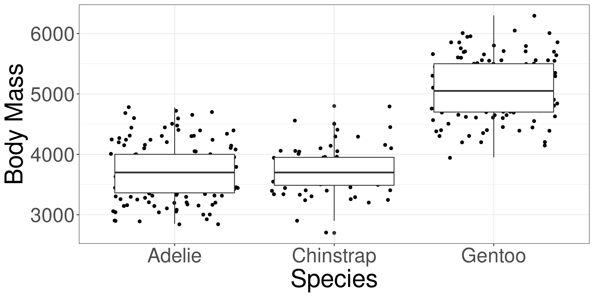

Code

Group Model Inference
Motivating Example
Group Model Inference
Family-wise Error Rate
Linear Model Inference
Logistic Model Inference
Post-Hoc Analysis
Motivating Example
Group Model Inference
Family-wise Error Rate
Linear Model Inference
Logistic Model Inference
Post-Hoc Analysis
Group Model Inference is the act of conducting a hypothesis test on the entire group model. We do this to determine if the group model is significantly different from just using the sample mean or proportion.
Group model inference determines if more variation is explained by including categorical variables.
We will conduct group model inference to determine if a group model explains more variation . Both Linear and Logistic Regression have techniques to test different models.
For Linear Regression, we determine the significance of the variation explained using an Analysis of Variance (ANOVA) table and F test.
For Logistic Regression, we determine the significance of the variation explained using a Likelihood Ratio test.
Conducting Model Inference first ensures that the Family-wise Error Rate is controlled.
\[ Y = \beta_0 + \beta_1 D_1 + \cdots + \beta_p D_p \]
\[ Y = \bar y \]
\[ Y = \beta_0 + \beta_1 D_1 + \cdots + \beta_p D_p \]
\[ lo(Y) = \hat p \]
\(H_0\): The different categories do not have significantly different means/proportions from each other.
\(H_a\): At least two categories have significantly different means/proportions from each other.
Motivating Example
Group Model Inference
Family-wise Error Rate
Linear Model Inference
Logistic Model Inference
Post-Hoc Analysis
Type I Error (False Positive): Rejecting a null hypothesis (\(H_0\)), when it is true.
Type I Error Rate (\(\alpha\)): The probability of making a Type I error in a single hypothesis test.
\[ \alpha = P(\text{Reject } H_0 \mid H_0 \text{ is true}) \]
Typically, \(\alpha = 0.05\), meaning a 5% chance of incorrectly rejecting a true null hypothesis.
Family-Wise Error Rate (FWER): The probability of making one or more Type I errors among all hypotheses tested.
\[ \text{FWER} = P(\text{At least one false rejection}) = P(V \ge 1) \]
where:
Bonferroni Correction
Holm-Bonferroni Procedure (Step-down)
Tukey’s Honest Significant Difference (HSD)
Motivating Example
Group Model Inference
Family-wise Error Rate
Linear Model Inference
Logistic Model Inference
Post-Hoc Analysis
Given 2 models:
\[ \hat Y = \hat\beta_0 + \hat\beta_1 X_1 + \hat\beta_2 X_2 + \cdots + \hat\beta_p X_p \]
or
\[ \hat Y = \bar y \]
Is the model with predictors do a better job than using the average?
Given a categorical variable with 4 categories, which model is better:
\[ \hat Y = \hat\beta_0 + \hat\beta_1 C_1 + \hat\beta_2 C_2 + \hat\beta_3 C_3 \]
or
\[ \hat Y = \bar y \]
Are the 2 models different from each other?
| Source | DF | SS | MS | F |
|---|---|---|---|---|
| Model | \(DFR=k-1\) | \(SSR\) | \(MSR=\frac{SSM}{DFR}\) | \(\hat F=\frac{MSR}{MSE}\) |
| Error | \(DFE=n-k\) | \(SSE\) | \(MSE=\frac{SSE}{DFE}\) | |
| Total | \(TDF=n-1\) | \(TSS=SSR+SSE\) |
\[ \hat F \sim F(DFR, DFE) \]
Y: Outcome variable in DATAX: Categorical variable in DATADATA: Name of the data (frame) set\(H_0\): The mean body mass are the same between the 3 penguin species.
\(H_1\): At least one species pairing have different mean body mass.
#> Analysis of Variance Table
#>
#> Response: body_mass
#> Df Sum Sq Mean Sq F value Pr(>F)
#> species 2 145190219 72595110 341.89 < 2.2e-16 ***
#> Residuals 330 70069447 212332
#> ---
#> Signif. codes: 0 '***' 0.001 '**' 0.01 '*' 0.05 '.' 0.1 ' ' 1Motivating Example
Group Model Inference
Family-wise Error Rate
Linear Model Inference
Logistic Model Inference
Post-Hoc Analysis
Given 2 models:
\[ g(\hat Y) = \hat\beta_0 + \hat\beta_1 X_1 + \hat\beta_2 X_2 + \cdots + \hat\beta_p X_p \]
or
\[ g(\hat Y) = \bar y \]
Is the model with predictors do a better job than using the average?
Given a categorical variable with 4 categories, which model is better:
\[ g(\hat Y) = \hat\beta_0 + \hat\beta_1 C_1 + \hat\beta_2 C_2 + \hat\beta_3 C_3 \]
or
\[ g(\hat Y) = \bar y \]
Are the 2 models different from each other?
The Likelihood Ratio Test is a test to determine whether the likelihood of observing the outcome is significantly bigger in a larger, more complicated model, than a simpler model.
It conducts a hypothesis tests to see if models are significantly different from each other.
Y: Outcome variable in DATAX: Categorical variable in DATADATA: Name of the data (frame) set\(H_0\): The proportion of having heart disease are the same between the 4 chest pain types.
\(H_1\): At least one chest pain pairing have different proportions of having heart disease.
#> Analysis of Deviance Table
#>
#> Model: binomial, link: logit
#>
#> Response: disease
#>
#> Terms added sequentially (first to last)
#>
#>
#> Df Deviance Resid. Df Resid. Dev Pr(>Chi)
#> NULL 296 409.95
#> cp 3 81.195 293 328.75 < 2.2e-16 ***
#> ---
#> Signif. codes: 0 '***' 0.001 '**' 0.01 '*' 0.05 '.' 0.1 ' ' 1Motivating Example
Group Model Inference
Family-wise Error Rate
Linear Model Inference
Logistic Model Inference
Post-Hoc Analysis
If we found to reject the null hypothesis from our model inference, we conduct a post-hoc analysis to determine which groups are significantly different from each other.
We will conduct multiple comparisons test, while maintaining the family-wise error rate, to determine which groups are different from each other.
We will use the emmeans function from the emmeans R package to obtain the group proportions or means.
Y: Outcome variable in DATAX: Categorical variable in DATADATA: Name of the data (frame) setY: Outcome variable in DATAX: Categorical variable in DATADATA: Name of the data (frame) set#> cp prob SE df asymp.LCL asymp.UCL
#> Asymptomatic 0.725 0.0375 Inf 0.6463 0.792
#> Non-anginal Pain 0.217 0.0452 Inf 0.1411 0.318
#> Atypical Angina 0.184 0.0553 Inf 0.0984 0.317
#> Typical Angina 0.304 0.0959 Inf 0.1525 0.515
#>
#> Confidence level used: 0.95
#> Intervals are back-transformed from the logit scaleA multi-comparison test can be achieved by using the pairs function from the output of the emmeans function.
This function will automatically adjust the p-values using Tukey’s method to fix the family-wise error rate.
Y: Outcome variable in DATAX: Categorical variable in DATADATA: Name of the data (frame) setY: Outcome variable in DATAX: Categorical variable in DATADATA: Name of the data (frame) set#> contrast estimate SE df t.ratio p.value
#> Adelie - Chinstrap -26.9 67.7 330 -0.398 0.9164
#> Adelie - Gentoo -1386.3 56.9 330 -24.359 <0.0001
#> Chinstrap - Gentoo -1359.3 70.0 330 -19.406 <0.0001
#>
#> P value adjustment: tukey method for comparing a family of 3 estimates#> contrast odds.ratio SE df null z.ratio p.value
#> Asymptomatic / (Non-anginal Pain) 9.537 3.110 Inf 1 6.917 <0.0001
#> Asymptomatic / Atypical Angina 11.738 4.860 Inf 1 5.948 <0.0001
#> Asymptomatic / Typical Angina 6.037 2.960 Inf 1 3.664 0.0014
#> (Non-anginal Pain) / Atypical Angina 1.231 0.560 Inf 1 0.456 0.9684
#> (Non-anginal Pain) / Typical Angina 0.633 0.333 Inf 1 -0.870 0.8204
#> Atypical Angina / Typical Angina 0.514 0.301 Inf 1 -1.138 0.6660
#>
#> P value adjustment: tukey method for comparing a family of 4 estimates
#> Tests are performed on the log odds ratio scale
m201.inqs.info/lectures/11